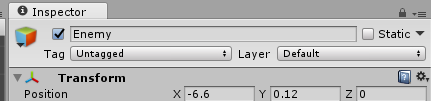
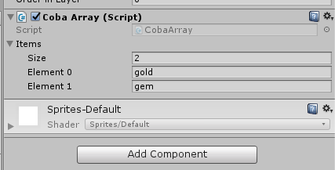
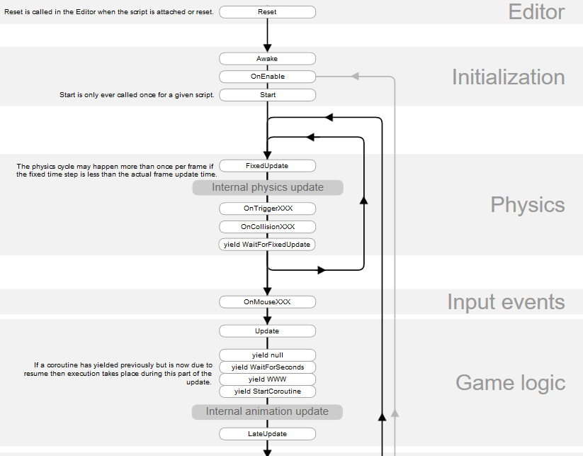
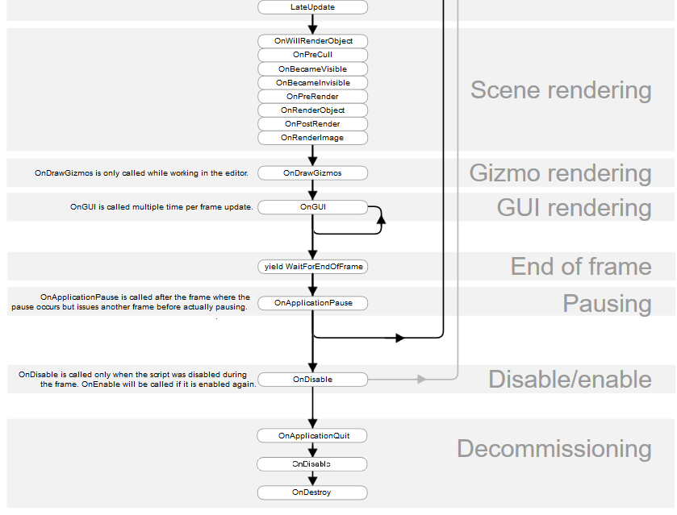
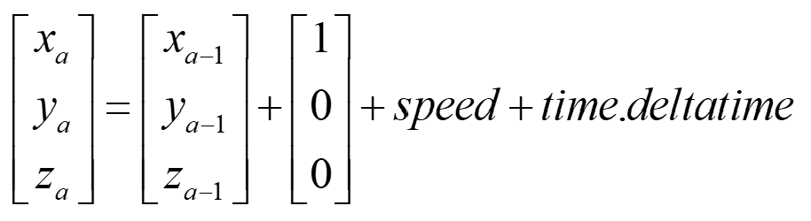
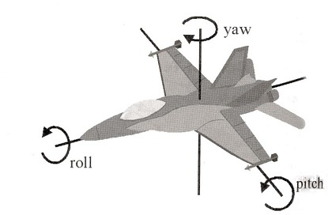
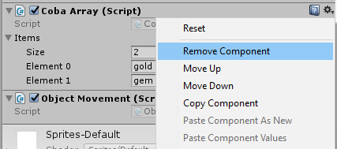

2. Menghubungkan object dengan variabel
Pendahuluan
Pada praktikum yang ke-2 kali ini, kita akan mencoba untuk melihat lebih lanjut tentang pemrograman dasar yang ada pada Unity. Sayangnya, mungkin tidak semua mahasiswa sudah mengambil pemrograman berorientasi objek. Dosen sangat menganjurkan untuk mempelajari PBO diluar perkuliahan Game Programming. Namun demikian, didalam course outline praktikum kali ini, tetap ada penjelasan singkat PBO (tidak detail). Untuk memulai praktikum yang ke-2 ini, buat project 2D baru bernama “Latihan3_2D”. Mulai dari sekarang backup seluruh project yang pernah dibuat agar nanti dikumudian hari dapat dipelajari lagi. PASTIKAN layout editor unity adalah “Default”.
Menghubungkan object dengan variabel
Ada kalanya kita membutuhkan referensi suatu game object dari game object lain. Misalnya ketika akan membuat musuh yang selalu mengikuti player. Dalam hal ini kita akan buat sesuatu yang lebih sederhana, yaitu jika posisi transform posisi x dari player lebih besar dari transform posisi x dari enemy, maka enemy akan berjalan ke kanan sampai di posisi player.
PRAKTIKUM:
- Tambahkan asset game “gambarPlayer” dan “gambarEnemy” kedalam project Window.
- Masukkan kedalam folder Images.
- Letakkan gambarPlayer dan gambarEnemy pada scene dan rename dengan “Player” dan “Enemy” di hierarchy windows seperti gambar dibawah ini:

- Buat script baru dengan nama “EnemyScript” seperti pada kode program berikut:

Transform.position mengambil property transformasi posisi pada game object yang berkaitan dengan EnemyScript
new Vector3 akan dijelaskan lebih lanjut di Class PBO
movespeed adalah variable yang dibuat untuk mengatur kecepatan pergerakan
Time.deltaTime agar kecepatan pergerakan menjadi lebih smooth
- Masukkan pada komponen Inspector dari game object “Enemy”. Klik pada symbol gembok seperti terlihat pada gambar dibawah:

- Drag game object “Player” dari hierarchy window kedalam Property “Player” dan isikan movespeed dengan nilai 3 seperti gambar dibawah ini:

- Klik pada gembok pada Inspector untuk melakukan “unlock inspector”
- Jalankan unity dan lihat hasilnya!
KUMPULKAN:
Screenshoot Game tab dan simpan dengan nama sc_02_01.jpg
Tipe data Array
Array merupakan koleksi atau kumpulan elemen bisa berupa variable atau nilai dengan tipe data yang sama dan ukuran yang sudah ditentukan. Sangat penting untuk menentukan ukuran array dengan pasti untuk menghindari membuang memory yang sia-sia. Bentuk array adalah dengan [ ]. Berikut adalah contoh deklarasi array:
double[] balance; Inisialisasi array mirip dengan instance objek (lihat bagian pemrograman berorientasi objek), yaitu dengan keyword new. Ketika mendefinisikan array pastika bahwa array sudah di inisialisasi, jika tidak, akan terjani error NULL. Berikut adalah contoh inisialisasi array:
double[] balance = new double[10];Untuk menassign nilai pada array dapat dilakukan dengan berbagai cara diantaranya adalah:
Assign nilai array saat dideklarasikan:
double[] balance = { 2340.0, 4523.69, 3421.0};
Membuat array dengan inisialisasi langsung:
int [] marks = new int[5] { 99, 98, 92, 97, 95};
Membuat array tanpa memberikan ukuran fix tetapi langsung dengan menassign nilai:
int [] marks = new int[] { 99, 98, 92, 97, 95};
Memindahkan array (copy) ke variable array yang lain:
int [] marks = new int[] { 99, 98, 92, 97, 95}; int[] score = marks;
PRAKTIKUM:
- Buat script baru dengan nama CobaArray.
- Buat variable public array items seperti berikut:

- Masukkan CobaArray dalam game object “Player” yang sebelumnya sudah ada di scene.
- Masuk pada Inspector “Player” dan isikan pada kolom property items size 2 (sebelumnya klik symbol segitiga kecil disebelah kiri items dan size ukuran array) dan ketika muncul textfield baru isikan “gold” dan “gem” seperti pada gambar berikut.

- Jalankan unity dan lihat Console Output.
KUMPULKAN:
Screenshoot Console Output dan simpan dengan nama sc_02_02.jpg
Method yang sudah ditentukan Unity
Ada beberapa method yang sudah ditentukan unity monobehaviour dari awal (built-in method). Kita TIDAK DIPERBOLEHKAN untuk memodifikasi nama methodnya baik itu huruf besar atau huruf kecil atau jenis typo yang lain (case sensitive). Yang diperbolehkan adalah menambah isi dari method tersebut. Dalam hal ini contohnya adalah method Start() dan Update(). Berikut adalah built-in method yang sering dipakai selain start dan update. Lebih lengkap lihat:
https://docs.unity3d.com/ScriptReference/MonoBehaviour.html :
| Nama Method | Keterangan |
|---|---|
| Awake | Awake dipanggil ketika script instance sedang dibuka. (sebelum Start()) |
| FixedUpdate | Method ini akan dipanggil setiap waktu framerate frame yang fix jika Monobehavior aktif |
| LateUpdate | Dipanggil pada setiap frame |
| OnCollisionEnter | Dipanggil ketika tumbukan objek 3D terjadi |
| OnCollisionEnter2D | Dipanggil ketika tumbukan objek 2D terjadi |
| OnCollisionStay | Dipanggil ketika sedang terjadi tumbukan objek 3D |
| OnCollisionStay2D | Dipanggil ketika sedang terjadi tumbukan objek 2D |
| OnCollisionExit | Dipanggil ketika selesai tumbukan objek 3D |
| OnCollisionExit2D | Dipanggil ketika selesai tumbukan objek 2D |
| OnTriggerEnter | Dipanggil ketika trigger tumbukan objek 3D terjadi, hanya saat trigger diaktifkan |
| OnTriggerEnter2D | Dipanggil ketika trigger tumbukan objek 2D terjadi, hanya saat trigger diaktifkan |
| OnTriggerStay | Dipanggil ketika trigger tumbukan sedang terjadi untuk objek 3D, hanya saat trigger diaktifkan |
| OnTriggerStay2D | Dipanggil ketika trigger tumbukan sedang terjadi untuk objek 2D, hanya saat trigger diaktifkan |
| OnTriggerExit | Dipanggil ketika trigger tumbukan selesai terjadi untuk objek 3D, hanya saat trigger diaktifkan |
| OnTriggerExit2D | Dipanggil ketika trigger tumbukan selesai terjadi untuk objek 2D, hanya saat trigger diaktifkan |
| OnGUI | Dipanggil untuk men-handle event GUI (Graphical User Interface) |
| OnMouseDown | Dipanggil ketika user sudah menekan mouse button pada elemen GUI atau collider |
| OnMouseDrag | Dipanggil ketika user menekan dan menyeret/drag pada elemen GUI atau Collider |
| OnMouseEnter | Dipanggil ketika user menekan mouse/klik pada elemen GUI atau Collider |
| OnMouseExit | Dipanggil ketika user selesai menekan mouse/klik pada elemen GUI atau Collider |
| OnDestroy | Fungsi ini dipanggil ketika Monobehaviour akan dihancurkan / destroy |
:: {.responsive}
Flowchart Lifecycle Monobehaviour Unity https://docs.unity3d.com/Manual/ExecutionOrder.html
 
Translasi 2D
Translasi adalah operasi perpindahan posisi dari suatu objek (2 dimensi) dari satu titik ke titik yang lain. Perubahan posisi ini berlaku dalam arah sejajar sumbu x atau y. Peran vektor disini sangatlah penting. Pada setiap game object unity memiliki transformasi 3D seperti posisi, rotasi, dan skala. Hal tersebut dapat dilihat pada Inspector Transform setiap game object.
Posisi, rotasi, dan skala pada dasarnya bertipe vector 3D. Dengan mengabaikan nilai z, maka bisa dikatakan bahwa transfomasi yang akan berlaku adalah transformasi 2D (hanya untuk translasi bukan rotasi). Berikut adalah rumus sederhana yang digunakan untuk translasi kearah kanan.

x_a,y_a,z_a merupakan vektor posisi x,y,z sesudah ditranslasi dan x_a-1,y_a-1,z_a-1 merupakan vektor posisi x,y,z sebelum ditranslasi. t_x merupakan nilai vektor translasi untuk sumbu x. t_x dapat diisi dengan suatu nilai konstan mengikuti waktu delta. Waktu delta itu adalah waktu yang berubah terus menerus ketika timeframe dari game dijalankan. Maka dari itu pergerakan translasi ini dapat dilakukan pada method Update(). Isikan kode berikut dalam
transform.Translate(Vector3.right*2f*Time.deltaTime); nilai “2f” dapat digantikan dengan variable speed, disini speed merupakan nilai konstan translasi. Seperti pada rumus diatas yaitu t_x. Translate merupakan fungsi atau method yang sudah disediakan unity. Namun demikian, kita akan mencoba menggunakan rumus daripada menggunakan method Translate. Berikut adalah kode programnya: (letakkan didalam fungsi update)
transform.position = transform.position +
(Vector3.right * speed * Time.deltaTime); Vector3.right sudah disediakan juga oleh Unity sebagai trigger nilai kekanan. Berikut adalah penjelasannya:

Jadi Vector3.right bernilai [1 0 0] dan kemudian ditambahkan dengan nilai konstan dari speed dan Time.deltaTime. praktikum berikutnya, kita akan mencoba untuk membuat Vector3.right, Vector3.left, Vector3.up, dan Vector3.down. Unity sudah menyedikan operasi vektor untuk penjumlahan, pengurang, dan perkalian hanya dengan “+”,”-”, dan ”*”.
PRAKTIKUM:
- Buat script baru dengan nama TranslasiObjek.
- Buat variable dengan nama “kekanan”, “kekiri”, “keatas”,”kebawah” dengan tipe data
Vector3. Berikut adalah contohnya deklarasi Vector3:
Vector3 kekanan; Didalam method Start(), lakukan inisialisasi Vector3 untuk variabel kekanan dengan nilai vektor yang benar.
kekanan = [1,0,0]
kekiri = [-1,0,0]
keatas = [0,1,0]
kebawah = [0,-1,0]
berikut adalah salah satu contoh inisialisasi variable kekanan. (pastikan bahwa kekanan sudah dideklarasikan sebelumnya) kekanan = new Vector3(1,0,0);Didalam method Update() , buat kode translasi berikut:
transform.position = transform.position + (kekanan * speed * Time.deltaTime); - Jalankan unity dan lihat apa yang terjadi.
- Dalam kode translasi tersebut ganti variable kekanan dengan kekiri atau keatas atau kebawah.
- Jalankan unity dan lihat apa yang terjadi.
KUMPULKAN:
- Screenshoot Console Output dan simpan dengan nama sc_02_03.jpg
Rotasi 2D
Sebelum melakukan transformasi rotasi Game object, kita terlebih dahulu harus memahami tentang Quaternion dan sudur Euler di Unity. Unity tidak menggunakan matriks untuk melakukan rotasi tetapi Quaternion. Hal ini berlaku baik 3D maupun 2D. Quaternion merupakan perluasan dari bilangan-bilangan kompleks yang tidak komutatif. Biasanya Quartenion diterapkan pada mekanika 3D. Quartenion ditemukan oleh ahli matematika dan astronomi Inggris yang bernama William Rowan Hamilton. Quartenion merupakan himpunan berlambang dan sama seperti vektor 4 dimensi atau berlambang . Rumus Quartenion di Unity adalah sebagai berikut:
\(x+yi+zj+wk\)
I,j,dan k bukan merupakan variable melainkan sumbu independen. Untuk pemahaman singkat, Quartenion seperi vektor 4 dimensi, yaitu x,y,z,dan w. Informasi lebih lanjut dapat dibaca di-link: https://luckytoilet.wordpress.com/2014/11/24/visualizing-quaternions-with-unity/. Selain Quartenion, juga harus dipahami tentang sudut euler. Dalam Inspector Transform pada game object Unity terdapat Rotasi x,y, dan z. Rotasi tersebut bertipe Vector3. Namun demikian, secara teori rotasi x,y,z tersebut bernilai sudut euler.
Dalam dunia penerbangan biasanya orientasi pesawat digambarkan dengan sebutan pitch,yaw, dan roll. Pitch saat pesawat take off dan landing. Yaw ketika pesawat berbelok kanan atau kiri. Roll saat pesawat berputar-putar. Kombinasi dari ketiganya itu yang akan membentuk rotasi sudut euler. Rincian gambaran pitch, yaw, dan roll diperlihatkan pada gambar berikut:

Pada modebehaviour unity, untuk dapat melakukan rotasi (dalam hal ini 2D) tambahkan kode berikut didalam method Update():
transform.Rotate(Vector3.back * speedRotasi * Time.deltaTime,10); atau tanpa menggunakan fungsi bentukan Unity:
transform.rotation = transform.rotation *
Quaternion.Euler(mundur * speedRotasi * Time.deltaTime);Pada kode tersebut untuk memperbaharui rotasi harus dengan operasi perkalian. Namun transform.rotation bukanlah sudut euler melainkan Quaternion. Sehingga membutuhkan mekanisme konversi dari sudut euler ke Quaternion. Mundur merupakan variable Vector3 yang bernilai [0,0,-1] atau sama dengan memanggil Vector3.back. Quaertenion.Euler sebetulnya berisi rumus konversi dari sudut euler ke Quaternion.
Dimana q_IB merupakan Quartenion hasil konversi, merupakan pitch, roll, dan yaw. Rumus tersebut dapat dijadika method untuk menggantikan Quartenion.Euler seperti pada kode berikut:
static Quaternion toQuaternion(Vector3 euler)
{
Quaternion q;
float pitch = euler.y;
float roll = euler.x;
float yaw = euler.z;
float t0 = Mathf.Cos(yaw * 0.5f);
float t1 = Mathf.Sin(yaw * 0.5f);
float t2 = Mathf.Cos(roll * 0.5f);
float t3 = Mathf.Sin(roll * 0.5f);
float t4 = Mathf.Cos(pitch * 0.5f);
float t5 = Mathf.Sin(pitch * 0.5f);
Debug.Log (t0 +" "+ t1+" " + t2+" " + t3+" " + t4+" " + t5+" ");
q.x = t0 * t3 * t4 - t1 * t2 * t5;
q.y = t0 * t2 * t5 + t1 * t3 * t4;
q.z = t1 * t2 * t4 - t0 * t3 * t5;
q.w = t0 * t2 * t4 + t1 * t3 * t5;
return q;
} PRAKTIKUM:
- Buat script baru dengan nama RotasiObjek.
- Buat variable dengan nama “maju” dan “mundur” dengan tipe data Vector3. Berikut adalah contoh deklarasi Vector3:
Vector3 maju; - Didalam method Start(), lakukan inisialisasi Vector3 untuk variabel kekanan dengan nilai vektor yang benar.
maju = [0,0,1]
mundur = [0,0,-1]
berikut adalah salah satu contoh inisialisasi variable kekanan. (pastikan bahwa kekanan sudah dideklarasikan sebelumnya)
maju = new Vector3(0, 0, 1); - Didalam method Update() , gunakan method toQuaternion dan buat kode rotasi berikut:
transform.rotation = transform.rotation *
toQuaternion(mundur * speedRotasi * Time.deltaTime); - Jalankan unity dan lihat apa yang terjadi.
- Dalam kode rotasi tersebut ganti variable mundur dengan maju.
- Jalankan unity dan lihat apa yang terjadi.
KUMPULKAN:
- Screenshoot Console Output dan simpan dengan nama sc_02_04.jpg
Pemrograman Berorientasi Object
Class
Class dapat dibanyangkan menjadi sebuah blueprint dari sesuatu objek. Misalnya blueprint dari object rumah adalah design rumah yang dibuat oleh arsitektur. Dalam pemrograman blueprint tersebut merupakan sebuah kode program yang dapat berisi banyak variable atau property dan banyak fungsi atau methods. Sebuah blueprint dapat dipanggil untuk dijadikan objek atau dikenal dengan istilah Instance. Jadi objek adalah instance dari class. Berikut adalah contoh kode program:
using System;
public class Person
{
public Person ()
{
}
}untuk membuat sebuah objek maka harus dilakukan instance seperti berikut: Person mahasiswa = new Person ();
Property, Method, dan Enkapsulasi
Property pada dasarnya adalah sebuah variable dengan atau tanpa akses modifier. Berikut adalah contoh kode programmnya:
public int score;
private string name; Akses modifier pada pemrograman C# ada tiga yaitu public, private, dan protected. Akses modifier berkaitan dengan akses variabelnya.
Private: Melindungi members Class sehingga tidak dapat diakses dari luar Class tersebut. Terkait dengan konsep enkapsulasi.
Protected: Memperbolehkan members Class dapat diakses oleh Class yang merupakan suatu turunan Class tersebut.
Public: Memperbolehkan members Class untuk dapat diakses oleh Class yang lain.
Method atau fungsi merupakan sebuah perilaku dari class. Misalnya class person memiliki property tangan dan memiliki perilaku memukul. Berikut adalah contoh kode programnya:
using System;
public class Person
{
public int tangan;
public Person ()
{
}
void Memukul(int tangan)
{
this.tangan = tangan;
}
}Enkapsulasi adalah konsep dari PBO untuk menyembunyikan suatu informasi. Hal ini mencegah pihak-pihak tertentu untuk mengakses kode (variable atau method) secara langsung. Berikut adalah wujud implementasi dari konsep tersebut:
class Person
{
private string name; // the name field
public string Name // the Name property
{
get
{
return name;
}
}
} Inheritance
Merupakan konsep pewarisan dalam PBO. Suatu objek dapat memiliki objek turunan dengan sifat yang sama dengan objek orangtuanya atau parent. Implementasi konsep ini sudah kita lakukan saat membuat Class baru di Unity. Misalnya kode berikut:
using System.Collections;
using System.Collections.Generic;
using UnityEngine;
public class EnemyScript : MonoBehaviour {
public float movespeed;
public GameObject player;
void Start() {
// Start the enemy ten units behind the player character.
}
// Update is called once per frame
void Update () {
if(player.transform.position.x > transform.position.x)
transform.position = new Vector3 (transform.position.x + movespeed * Time.deltaTime, transform.position.y);
}
} Perhatikan bahwa EnemySctipt pada dasarnya merupakan turunan dari Class MonoBehaviour. Sehingga kita dapat mengakses Start() dan Update() dimana method tersebut dimiliki juga oleh Class orang-tuanya yaitu MonoBehaviour.
Polymorphism
Merupakan kemampuan yang dimiliki oleh suatu objek untuk dapat memiliki banyak bentuk. Berikut adalah contohnya: Buat tiga Class Fruit, Apple, dan FruitSalad.
=============== Fruit.cs
using UnityEngine;
using System.Collections;
public class Fruit
{
public Fruit()
{
Debug.Log("1st Fruit Constructor Called");
}
public void Chop()
{
Debug.Log("The fruit has been chopped.");
}
public void SayHello()
{
Debug.Log("Hello, I am a fruit.");
}
}=================Apple.cs
using UnityEngine;
using System.Collections;
public class Apple : Fruit
{
public Apple()
{
Debug.Log("1st Apple Constructor Called");
}
public new void Chop()
{
Debug.Log("The apple has been chopped.");
}
public new void SayHello()
{
Debug.Log("Hello, I am an apple.");
}
} =========FruitSalad.cs
using UnityEngine;
using System.Collections;
public class FruitSalad : MonoBehaviour
{
void Start ()
{
Fruit myFruit = new Apple();
myFruit.SayHello();
myFruit.Chop();
Apple myApple = (Apple)myFruit;
myApple.SayHello();
myApple.Chop();
}
} Masukkan kode FruitSalad pada suatu game object, jalankan unity dan lihat apa yang terjadi.
Generic Programming
Merupakan teknik perograman yang memperbolehkan apapun tipe data baik itu tipe data biasa maupun tipe data bentukan atau objek yang didefinisikan sendiri untuk dapat dijadikan sebagai parameter. Simbol dari generic adalah “<apapuntipedata>”. Contoh implementasinya adalah saat kita ingin mengambil komponen Transform dari Object dengan memanfaatkan fungsi generik unity:
public GameObject player;
void Start() {
// Start the enemy ten units behind the player character.
Transform rb = player.GetComponent<Transform>();
} Latihan
Buat kode c# baru dan beri nama “ObjectMovement” pada game object “Player”.
Pastikan pada Inspector “Player” tidak ada script lain yang berkaitan selain “ObjectMovement”.
Jika ada, disable atau remove component klik symbol setting pojok kanan atas script component seperti gambar berikut:
Buat variable Vector3 kekanan, kekiri, maju, mundur, keatas, dan kebawah seperti yang telah dijelaskan pada bab sebelumnya. (Jangan lupa untuk inisialisasi Vector3 didalam method Start())
Buat variable public dengan nama “aksi” bertipe int.
Isikan kode program yang di-comment seperti gambar berikut: (isi sesuai dengan penjelasan sebelumnya. Boleh dengan fungsi yang Unity atau membuat sendiri)
// Update is called once per frame
void Update () {
switch (aksi) {
case 0:
//translasi ke kanan
break;
case 1:
//translasi ke kiri
break;
case 2:
//translasi ke atas
break;
case 3:
//translasi ke bawah
break;
case 4:
//rotasi ke kanan
break;
case 5:
//rotasi ke kiri
break;
}
}- Jalankan unity dan isi aksi = 1 atau 2 atau 3 atau 4 atau 5 pada Inspector Player dan amati apa yang terjadi.
KUMPULKAN:
Screenshoot game tab dan simpan dengan nama sc_02_05.jpg
REFERENSI
- https://docs.unity3d.com/550/Documentation/Manual/ControllingGameObjectsComponents.html
- https://www.tutorialspoint.com/csharp/csharp_arrays.htm
- https://videos.raywenderlich.com/courses/47-beginning-c/lessons/6
- https://docs.unity3d.com/ScriptReference/MonoBehaviour.html
- https://docs.unity3d.com/Manual/ExecutionOrder.html
- https://luckytoilet.wordpress.com/2014/11/24/visualizing-quaternions-with-unity/
- https://id.wikipedia.org/wiki/Kuaternion
- https://docs.microsoft.com/en-us/dotnet/csharp/programming-guide/classes-and-structs/using-properties
- https://www.tutorialspoint.com/csharp/csharp_encapsulation.htm
- https://unity3d.com/learn/tutorials/topics/scripting/polymorphism
- https://docs.unity3d.com/Manual/GenericFunctions.html
Mekanisme Pengumpulan Praktikum Mingguan
Untuk setiap mahasiswa: Buat 1 folder beri nama NIM lengkap. Masukkan file screenshot sc_02_01.jpg, sc_02_02.jpg, sc_02_03.jpg, sc_02_04.jpg, dan sc_02_05.jpg. Kemudian rar atau zip folder NIM kamu tadi dan kirimkan ke ketua kelas.
Contoh: A11200904997.rar
Untuk Ketua Kelas: SIapkan folder dengan nama Kode Kelas “_02” yang berisi kumpulan praktikum setiap mahasiswa. Lalu buat rar atau zip dan kirimkan ke email dosen.
Contoh: A114401_02.rar